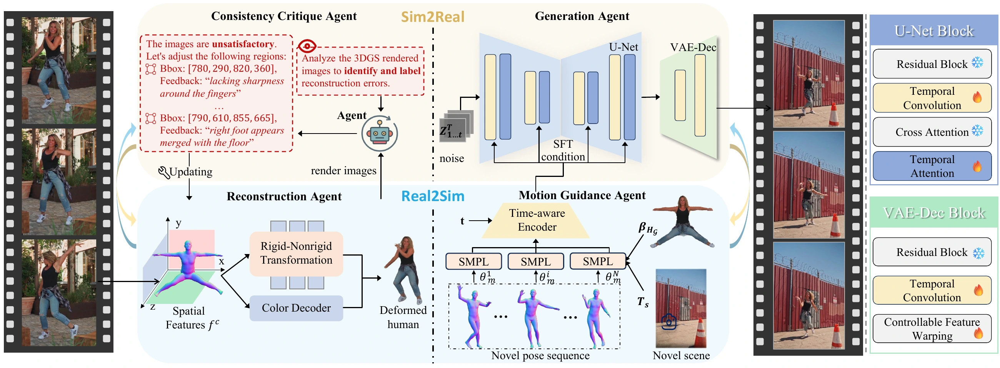
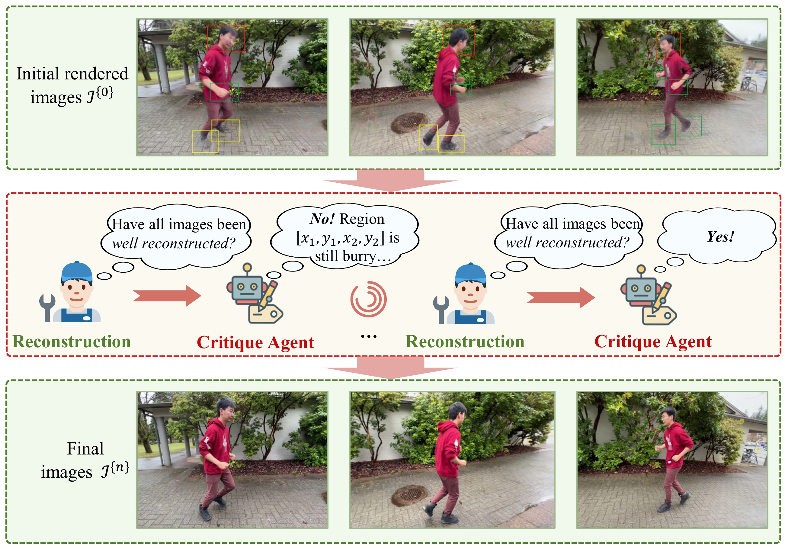
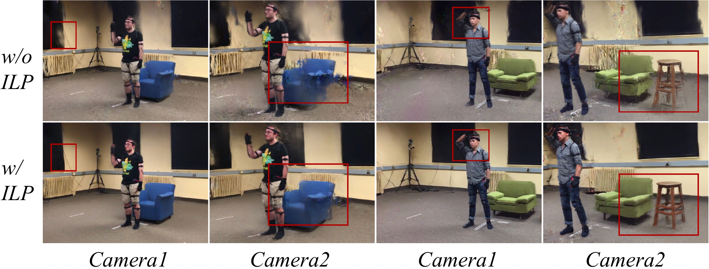
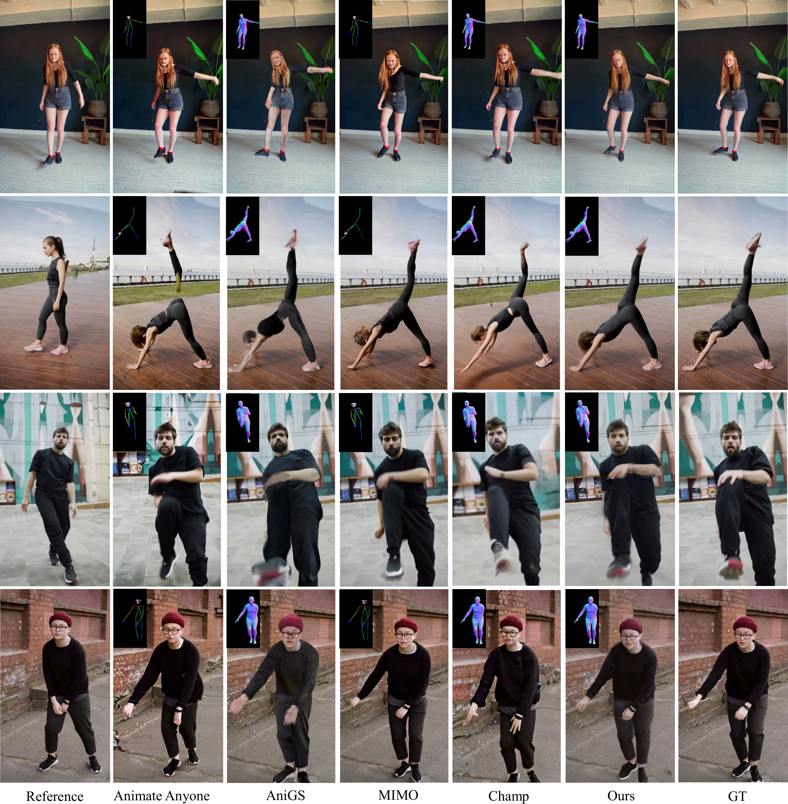
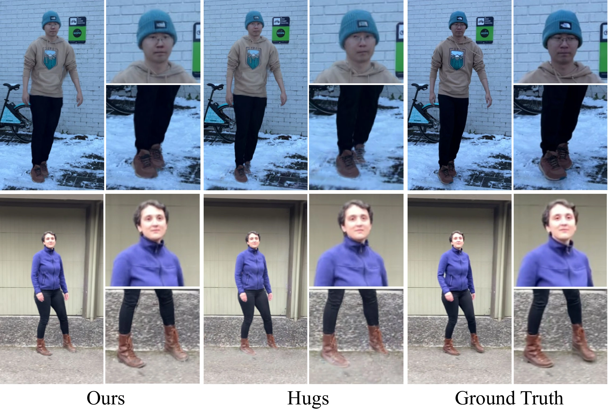
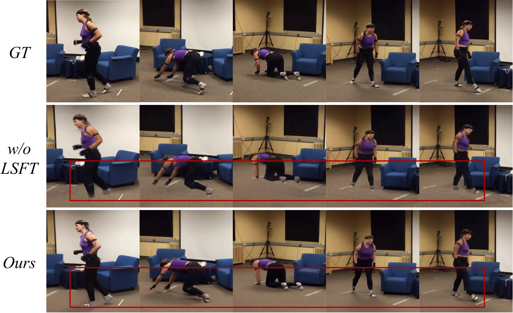
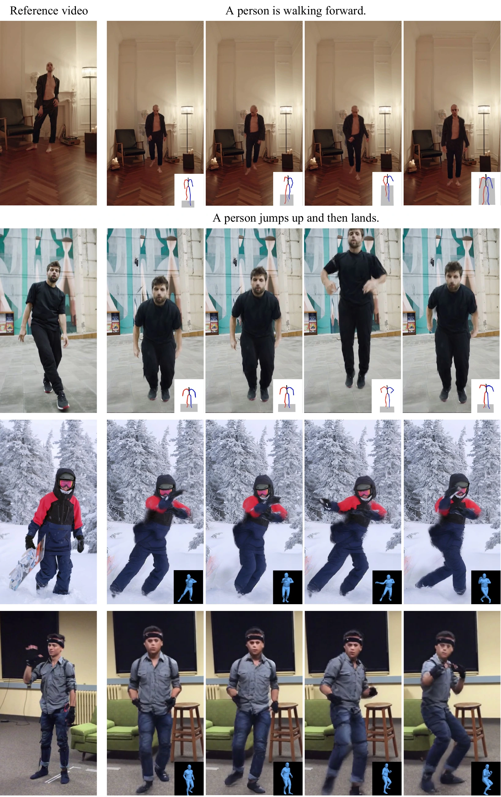
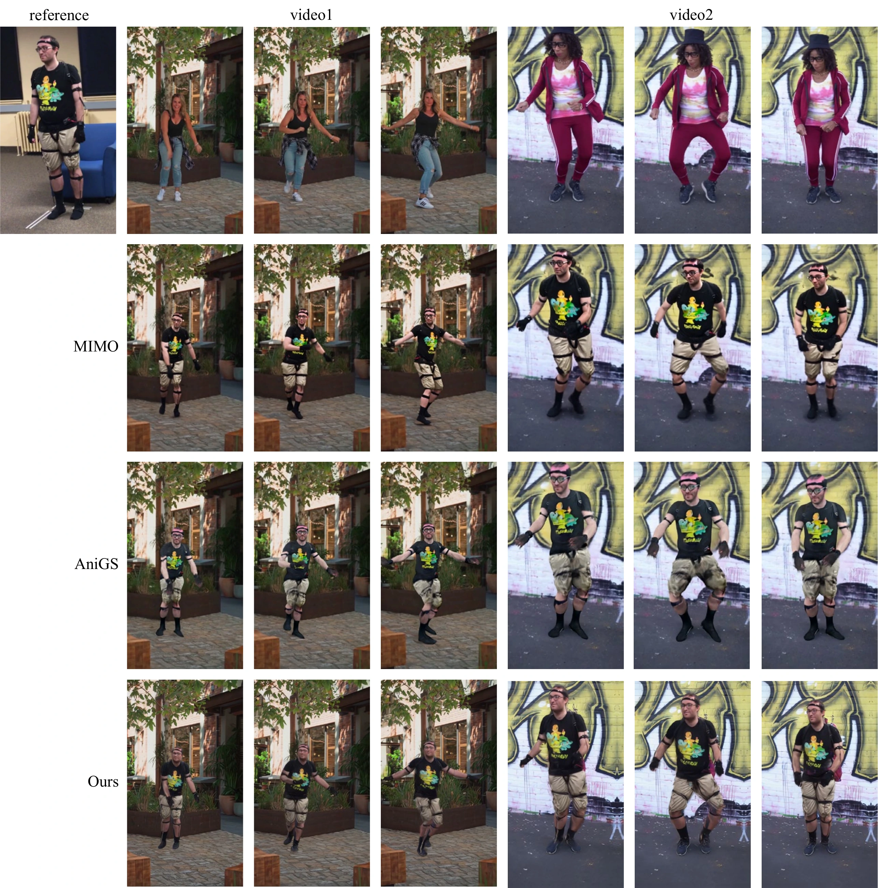
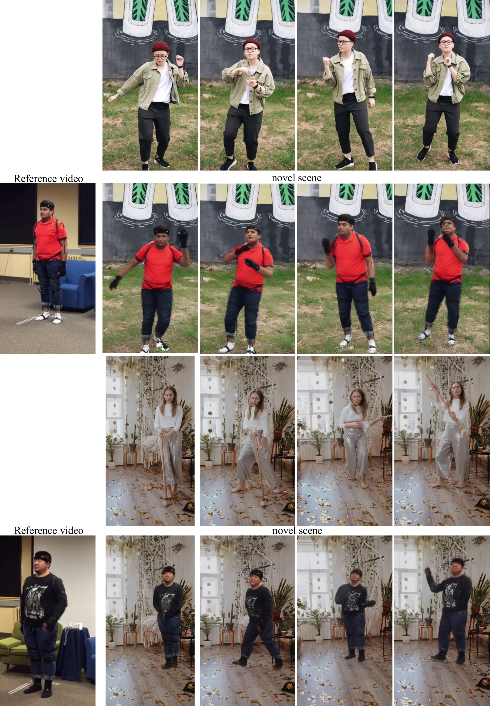

Reconstruction
Agent
Recovers separate human and static-scene Gaussians. Learned non-rigid offsets and residual skinning corrections preserve subject-specific geometry under articulation.
OUTPUT / ANIMATABLE 3D REPRESENTATIONCAL · COLLABORATIVE AGENTIAL LEARNING
From a monocular video to an animatable human and scene.
Geometry guides generation. Visual feedback refines geometry.
1 Sun Yat-sen University2 Yonsei University3 X-Era AI Lab4 Guangdong Key Laboratory of Big Data Analysis and Processing
* Corresponding author
01 / OVERVIEW
Reconstruction, motion control, visual critique, and video synthesis exchange information through concrete geometric and generative feedback.
Generating photorealistic, dynamic human–scene videos requires unifying geometric accuracy, motion expressiveness, and visual realism. While recent systems combine reconstruction, motion estimation, and diffusion-based generation, these modules often operate independently, leading to geometric drift and scene inconsistency. We introduce Collaborative Real2Sim–Sim2Real Agential Learning (CAL), a unified framework in which four specialized agents—Reconstruction, Motion Guidance, Consistency Critique, and Generation—exchange information through geometric and generative feedback. On the Real2Sim side, the Reconstruction Agent builds animatable human–scene Gaussian representations from monocular video, and the Motion Guidance Agent applies supplied poses and encodes rendered motion conditions. On the Sim2Real side, the Consistency Critique Agent assesses perceptual inconsistencies in rendered images and guides focused refinement, while the Generation Agent uses video diffusion to improve temporal appearance and human–scene integration. Localized critiques emphasize reconstruction losses in poorly reconstructed regions, and the Back-to-4D stage uses generated novel-view sequences as fixed pseudo-targets to refine the Gaussian model. Empirically, our system outperforms the evaluated baselines on human video synthesis and reconstruction benchmarks, while demonstrating strong capabilities in reenactment and pose generalization. These results highlight the effectiveness of Real2Sim–Sim2Real agential learning in producing temporally stable, expressive, and visually coherent human–scene dynamics.
“Sim” is an animatable digital human and static scene. Real2Sim builds and controls this representation; Sim2Real improves perceptual consistency and visual realism. Each agent is a specialized module in the pipeline.
02 / METHOD
A monocular source video provides identity and scene appearance. Supplied poses and cameras control the animation; two feedback paths improve the reconstructed model.

Recovers separate human and static-scene Gaussians. Learned non-rigid offsets and residual skinning corrections preserve subject-specific geometry under articulation.
OUTPUT / ANIMATABLE 3D REPRESENTATIONApplies externally supplied pose sequences, renders the articulated human, and encodes those renderings into time-aware conditions for video generation.
OUTPUT / MOTION CONDITION FEATURESA fixed Qwen2.5-VL-32B critic identifies inconsistent regions. Its boxes and feedback labels guide localized reconstruction-loss weighting over finite reflection rounds.
OUTPUT / LOCAL REFINEMENT SIGNALSVideo diffusion uses Spatial Feature Transform conditioning, temporal processing, and feature warping to improve appearance and human–scene integration.
OUTPUT / TEMPORALLY COHERENT VIDEOTHE FEEDBACK THAT CONNECTS THEM
Region-level feedback increases the weight of reconstruction losses in flagged areas, using the original images as supervision. Gradients update reconstruction parameters; they do not pass through the language-model response.

Render novel views, enhance them with the Generation Agent, then hold the generated sequences and video model fixed while optimizing the Gaussians. Iterative Latent Projection (ILP) refines appearance at new camera views.

03 / EVALUATION
Video synthesis on HumanVid, human–scene reconstruction on NeuMan, and component ablations on MoVi evaluate complementary parts of the framework.
| Method | PSNR ↑ | SSIM ↑ | LPIPS ↓ | FID-VID ↓ | User ↑ |
|---|---|---|---|---|---|
| AnimateAnyone | 16.102 | 0.633 | 0.398 | 99.49 | 2.482 |
| AniGS | 18.974 | 0.649 | 0.373 | 86.62 | 3.136 |
| MIMO | 20.845 | 0.783 | 0.266 | 82.34 | 3.504 |
| Champ | 17.986 | 0.651 | 0.382 | 101.91 | 2.637 |
| CAL (ours) | 21.934 | 0.802 | 0.223 | 76.20 | 4.103 |
Videos are divided into subsequences with a stride of 10. CAL reconstructs the subject from the collection of first frames; each baseline uses one first-frame reference per subsequence. All methods are evaluated on test frames. The User score averages 1–5 ratings from 25 participants, each evaluating 15 sequences (375 participant–sequence evaluations per method).
| Method | SSIM ↑ | PSNR ↑ | LPIPS ↓ |
|---|---|---|---|
| Vid2Avatar | 0.566 | 16.192 | 0.637 |
| NeuMan | 0.793 | 24.543 | 0.265 |
| HUGS | 0.829 | 25.498 | 0.122 |
| CAL (ours) | 0.891 | 26.992 | 0.081 |
CAL achieves the strongest aggregate scores among the evaluated methods. The paper also reports six individual NeuMan scenes and separate experiments on localized critique, reflection rounds, and critic model size.
| Configuration | SSIM ↑ | PSNR ↑ | LPIPS ↓ |
|---|---|---|---|
| Without CFW | 0.848 | 25.692 | 0.107 |
| Without temporal convolution | 0.821 | 25.311 | 0.141 |
| Without LSFT | 0.816 | 24.978 | 0.155 |
| Without ILP / Back-to-4D | 0.855 | 26.103 | 0.102 |
| Full CAL | 0.873 | 26.335 | 0.092 |
CFW: Controllable Feature Warping. LSFT: Latent Space Fine-Tuning. ILP: Iterative Latent Projection. Removing any of these components reduces performance in the reported MoVi experiment.
Values are reproduced from the CAL manuscript. ↑ Higher is better. ↓ Lower is better. PSNR is measured in dB.



| Configuration | PSNR ↑ | SSIM ↑ | LPIPS ↓ | FID-VID ↓ | T-Cons ↑ |
|---|---|---|---|---|---|
| Without Reconstruction | — | — | — | — | — |
| Without Motion Guidance | 20.58 | 0.768 | 0.281 | 84.91 | 0.86 |
| Without Critique | 19.93 | 0.748 | 0.298 | 88.45 | 0.84 |
| Without Generation | 20.41 | 0.758 | 0.294 | 88.72 | 0.84 |
| Full CAL | 21.93 | 0.802 | 0.223 | 76.20 | 0.92 |
Removing Reconstruction makes the pipeline undefined. T-Cons is the paper’s flow-based temporal consistency score, normalized to [0, 1].
| Setting | SSIM ↑ | PSNR ↑ | LPIPS ↓ |
|---|---|---|---|
| Initial | 0.842 | 26.723 | 0.115 |
| Round 1 | 0.913 | 28.254 | 0.070 |
| Round 2 | 0.914 | 28.348 | 0.068 |
| Round 3 | 0.915 | 28.414 | 0.068 |
| Round 4 | 0.914 | 28.386 | 0.068 |
Round 3 achieves the highest PSNR and SSIM; LPIPS ties across Rounds 2–4. The additional fourth round gives no further benefit in this experiment.
04 / APPLICATIONS
Transfer a subject’s appearance to new supplied motions and target environments, with geometry providing the basis for control.
CAL applies motion-capture sequences from AMASS or text-generated poses from MoMask to a personalized avatar, retaining the reference subject’s appearance and clothing.
The motion trajectory comes from an external source. CAL animates and renders the subject under that guidance.

Multiple driving videos provide distinct pose sequences. CAL preserves the reference subject’s facial appearance, clothing details, and body proportions across the generated sequences.
The paper compares CAL with MIMO and AniGS using the same reference identity.

The reconstructed human is placed in a target static scene and animated with supplied poses. The Generation Agent refines appearance for coherent human–scene video.
Each example pairs the target video with CAL’s reenactment, alongside the reference subject.

05 / IN MOTION
Expressive human motion, method comparisons, identity consistency, and animation with unseen poses.
SCOPE & LIMITATIONS
CAL remains sensitive to inaccurate SMPL estimates, especially for facial expressions and fine hand motion. Complex or dynamic environments challenge its COLMAP initialization and static-scene representation.
Monocular coverage leaves uncertainty in unseen surfaces. Large pose or viewpoint changes, unreliable critique, or hallucinated generated details can affect subsequent refinement.
Responsible use. Source imagery and the animated identity should be used with consent. Disclosing synthesized content and tracking its provenance can help mitigate identity misuse.
REFERENCE
Citation for the manuscript accompanying this project.
@misc{li_cal,
title = {Collaborative {Real2Sim--Sim2Real}
Agential Learning for Geometric
and Generative Human Dynamics},
author = {Li, Weiqi and Zhang, Zehao and
Lin, Liang and Wang, Guangrun},
note = {Manuscript},
url = {https://liwq229.github.io/cal/}
}